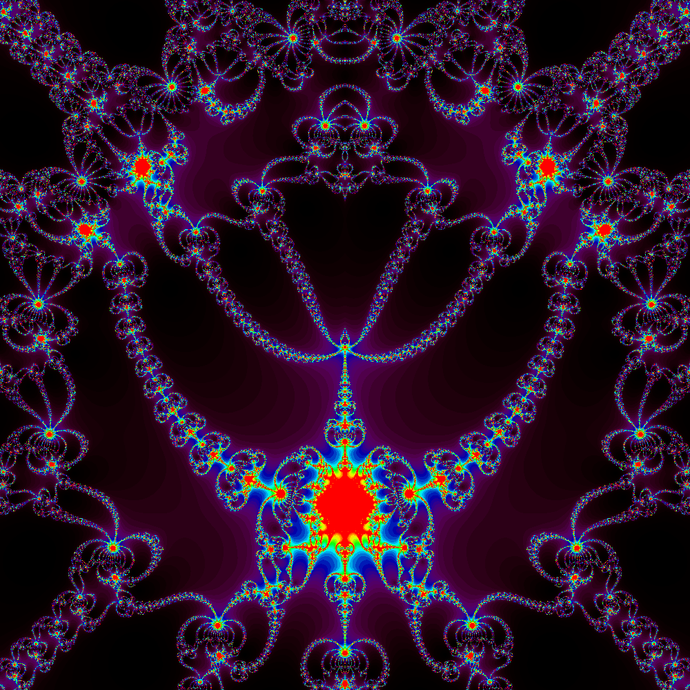

I'm Michael Bartlett, a senior this year. I've lived in Colorado my entire life, and I haven't even left the state until earlier this year when a friend was kind enough to treat me to a trip to Hawaii with them.
As a child I enjoyed impressing others by creating things they would have otherwise never experienced; after all, there's no satisfaction quite like materializing an idea with your own two hands. That passion has carried over into my education, granting
me more skills than I could have imagined when I was younger. Now I want to continue to learn so that I can continue to create new widgets the surprise myself and others.
Send me an e-mail!
One of my favorite quotes is Alan Watts musing:
Reality is only a Rorschach ink-blot, you know.
Hopefully by now you think I'm a pretentious pretty well versed dude. In fact you might say I'm a PRCSG!
Here's a project I found myself developing over the summer →→→ Newton-Fractal Audio Visualizer
Here it is embedded in case you like that more:
Here's the code for it:
#!/usr/bin/env python
from pydub import AudioSegment
from PIL import Image
import math, cmath, sys, os, inspect, re, atexit
filename = "./"+sys.argv[1]
extension = sys.argv[1].split('.')[1]
song = AudioSegment.from_file(filename, format=extension)
samples = song.get_array_of_samples()
imgx = 100
imgy = 100
image = Image.new("HSV", (imgx, imgy))
# drawing area
xa = -1.0
xb = 1.0
ya = -1.0
yb = 1.0
maxIt = 40 # max iterations allowed
eps = 1e-2 # max error allowed
def f(z,_i, loudness):
return abs(z**(2+_i))-z**16-1+cmath.log(abs(2*z**(1+3*(loudness**2))))
# return (10)*z**(3+_i)-(z**(16))+(cmath.log(abs(z**((1+_i)*(loudness**2)*2))))-1
# z^(2+i)-z^16-1+log(abs(2×z^(1+i))) _ 8×z^(3+i)-16×z^15-i
def df(z,_i):
return 8*z**(3+_i)-(16)*z**(15)-1
# return (z)**(5)-(16)*z**(15)-1
# Record the functions used in the directory name
funcs = []
for _f in [f, df]:
funcs.append(re.split(r'\s+|\n', inspect.getsource(_f))[3].replace("**","^").replace("*",u"\u00D7").replace("/",u"\u00F7").replace("_i","i").replace("cmath.","").replace("math.",""))
folder = "./render/" + " _ ".join(funcs)
if not os.path.exists(folder):
os.makedirs(folder)
fps = 60.0
frames = int(fps*len(song) / 1000.0)
sampleSize = len(samples)
frame= int(frames/2)
Sstep = sampleSize/frames
sample = frame*Sstep
Mstep = 0.01
_i = frame*Mstep
vols = []
maxVol = 0;
_temp = 0
while _temp < sampleSize:
vols.append(samples[int(_temp)])
if samples[int(_temp)] > maxVol:
maxVol = samples[int(_temp)]
_temp += Sstep
maxVol = (maxVol+song.max)/2
print(frames," frames, sample-step size: ",Sstep)
while frame < frames:
# loud=samples[int(sample)]/song.max
loud = vols[frame]/maxVol
for y in range(imgy):
zy = y * (yb - ya) / (imgy - 1) + ya
for x in range(imgx):
zx = x * (xb - xa) / (imgx - 1) + xa
z=complex(zy,zx)
i=0
while i < maxIt:
try:
dz = df(z,_i)
except OverflowError:
pass
try:
z0 = z - (f(z,_i,loud) / dz) # Newton iteration
except OverflowError:
pass
except ZeroDivisionError:
i+=1
continue
if abs(z0 - z) < eps: # stop when close enough to any root
break
z = z0
i+=1
shadow = int((float(i)/float(maxIt))**2 * 255.0)
image.putpixel((x, y), (255-shadow, 255, shadow*2))
print(frame,"/",frames,":",round(_i,3)," ~ ",round(y/imgy*100),"%", end='\r',flush=True)
image.convert("RGB").save(folder+"/%04d.png" % frame, "PNG")
sample += Sstep
_i+=Mstep
frame += 1
image.convert("RGB").save(folder+"/_0.tiff", "PNG")
Here is one of my favorite fractals I rendered while experimenting with this code: 